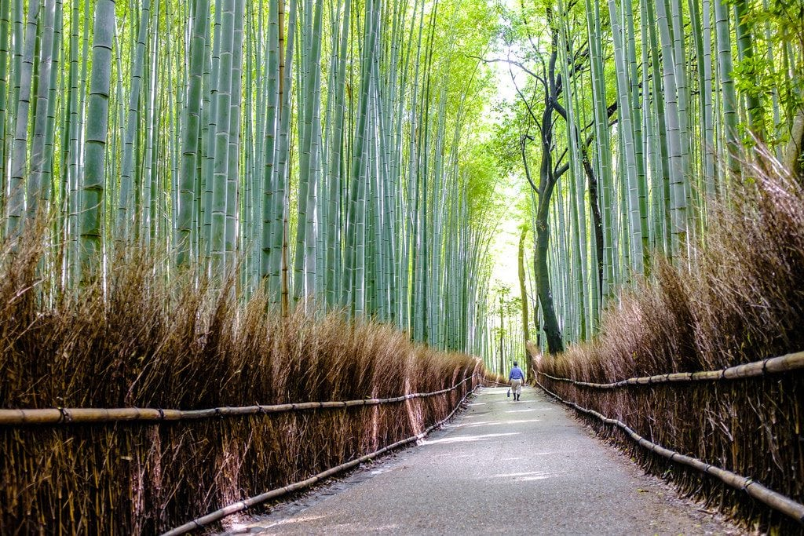
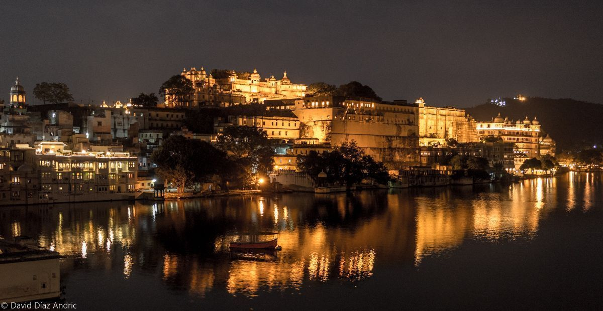

Bosque de Bambú de Arashiyama
Japón:Surcado por una red de senderos que invitan a la meditación, el bosque de bambú de Arashiyama es uno de los rincones
más inspiradores y fotografiados de Japón. Se localiza en una montaña al oeste de Kioto, rodeado por la espesura que protege el templo
Tenryu-ji (siglo XIV), uno de los más importantes de la escuela rinzai, que cuenta además con un extraordinario jardín zen. Un sendero
que atraviesa altísimos tallos de bambú que se mecen con el viento, creando un sonido que el gobierno japonés
ha clasificado como uno de los "100 sonidos que deben preservarse".

Udaipur: La Venecia de Oriente
India: Udaipur, conocida como «la Venecia de Oriente», se encuentra al sur de la provincia de Rajastán rodeado por las Montañas Aravali,
lo que le da clima y un aspecto muy diferente al resto de ciudades del Estado. Un destino muy interesante para ver en el norte de India.
Se la conoce también como la ciudad de los lagos debido a que existen varios lagos alrededor de ella. Cabe destacar entre ellos el lago Pichola,
que se encuentra en el centro de la ciudad. Hay otros lagos como el lago Fateh Sagar donde se encuentran dos pequeñas islas, una de las cuales contiene
un observatorio solar, y la otra un jardín llamado «Nehru Garden». Udaipur no puede faltar en tu viaje a la India.

Paro Taktsang (Nido del Tigre)
Bután: Un monasterio sagrado construido de forma increíble en el borde de un precipicio a 3.000 metros de altura. Solo se puede llegar caminando
por senderos de montaña. Escondido en lo alto de los acantilados del Valle de Paro, el Monasterio del Nido del Tigre (Paro Taktsang) no solo es el icono fotográfico
de Bután, sino un lugar de peregrinación impregnado de historia y espiritualidad. La ascensión a este lugar sagrado es un desafío físico y una experiencia intensa.